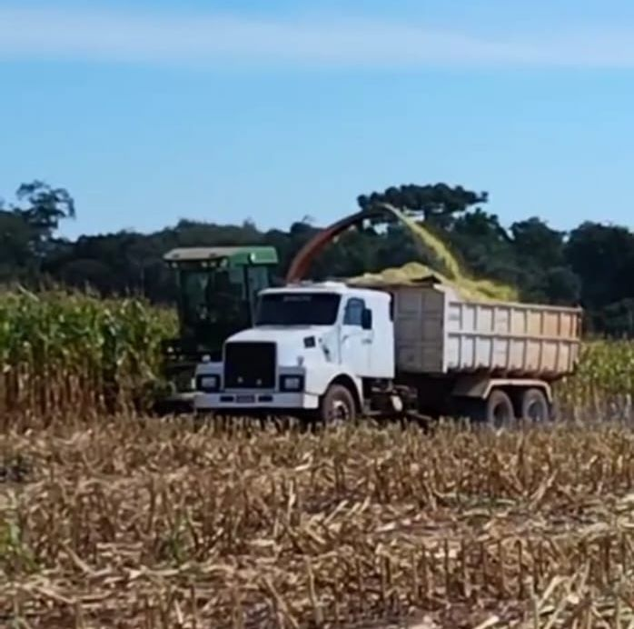

Produção Rural
A produção agrícola e pecuária é essencial para a economia e abastecimento do país. Ela envolve o cultivo de alimentos, criação de animais e fornecimento de matérias-primas para a indústria.
Industrialização no Campo
A transformação de produtos agrícolas em alimentos processados agrega valor à produção, gera empregos locais e fortalece comunidades rurais por meio das agroindústrias.
Agroindústria Familiar
Transforma produtos locais como leite, frutas e vegetais em alimentos com valor agregado e identidade regional.
Distribuição
Uma logística eficiente conecta o campo às cidades, garantindo alimentos frescos e fortalecendo mercados locais.
Desenvolvimento Econômico
A produção aliada à industrialização movimenta a economia rural, aumenta a renda e estimula a permanência das famílias no campo.